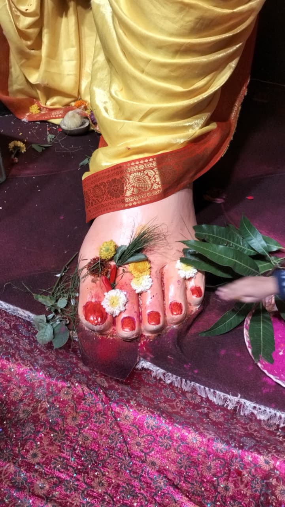
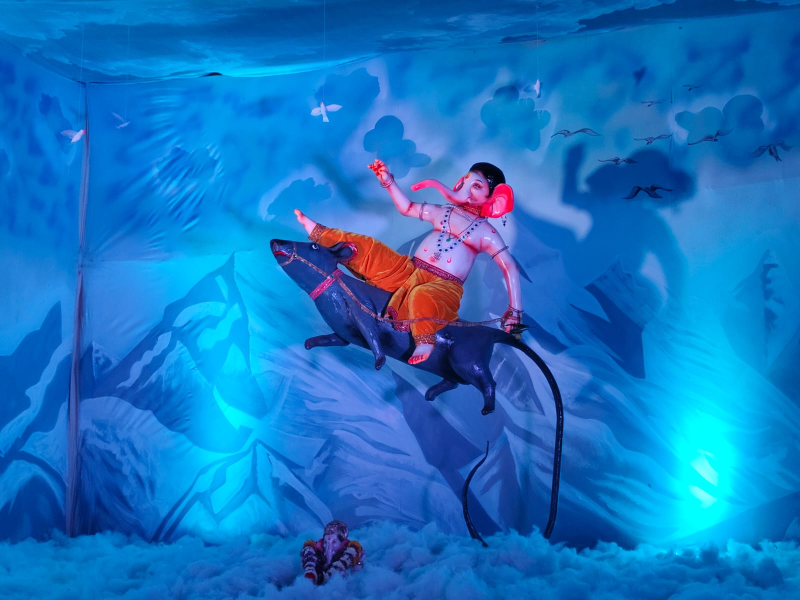
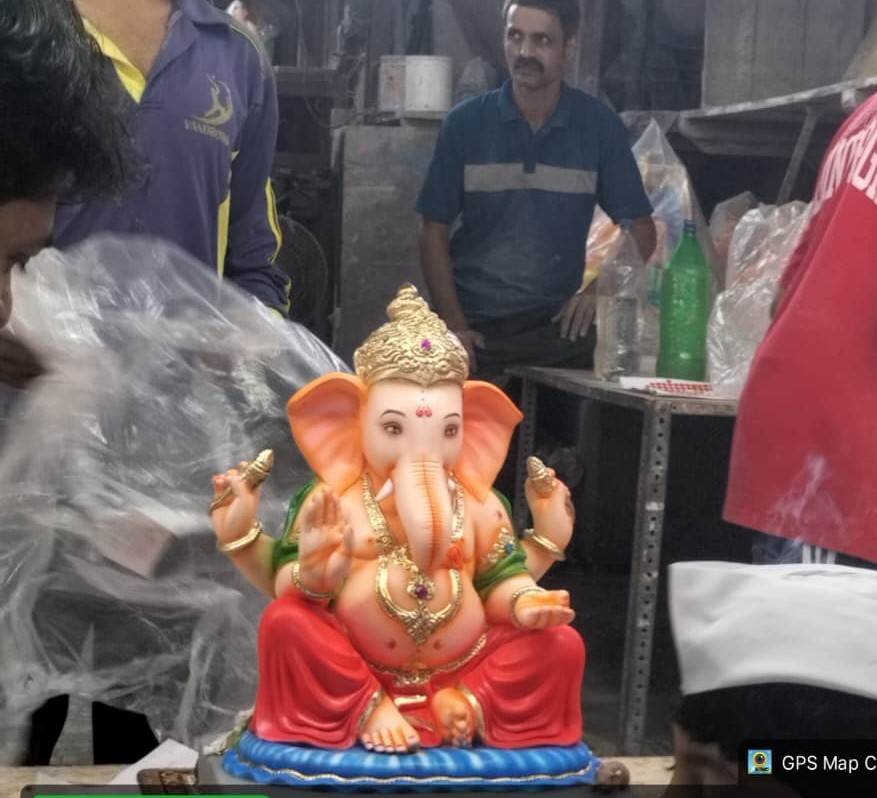
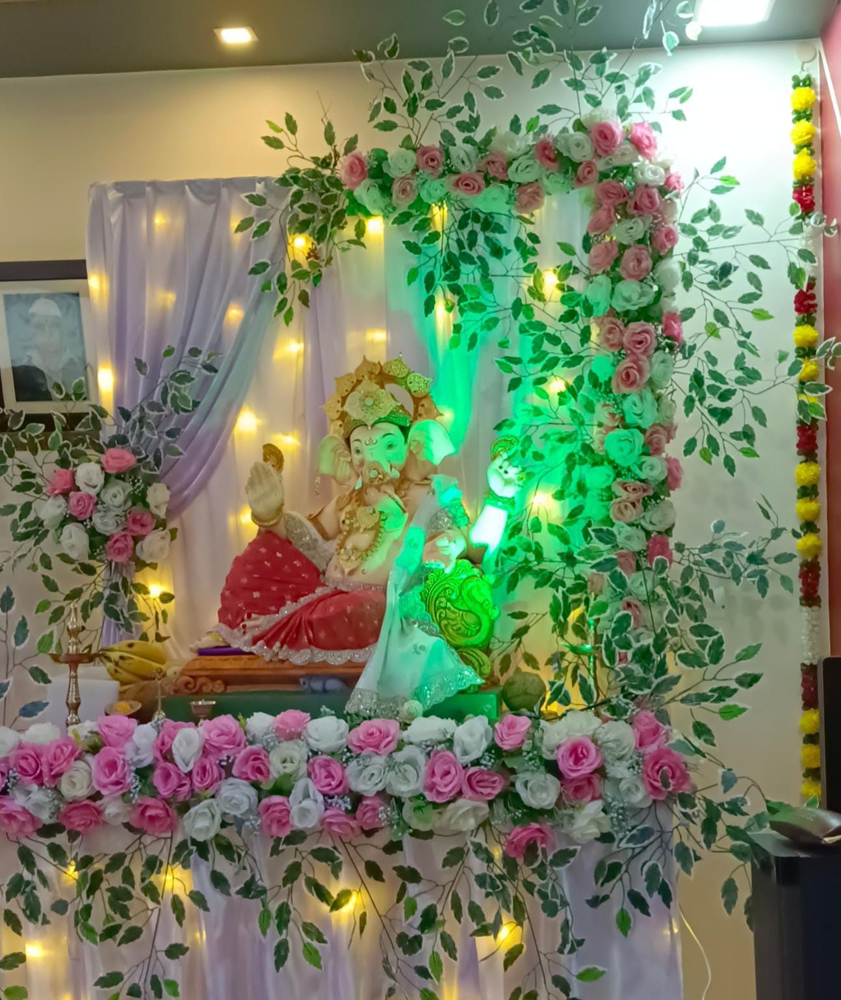
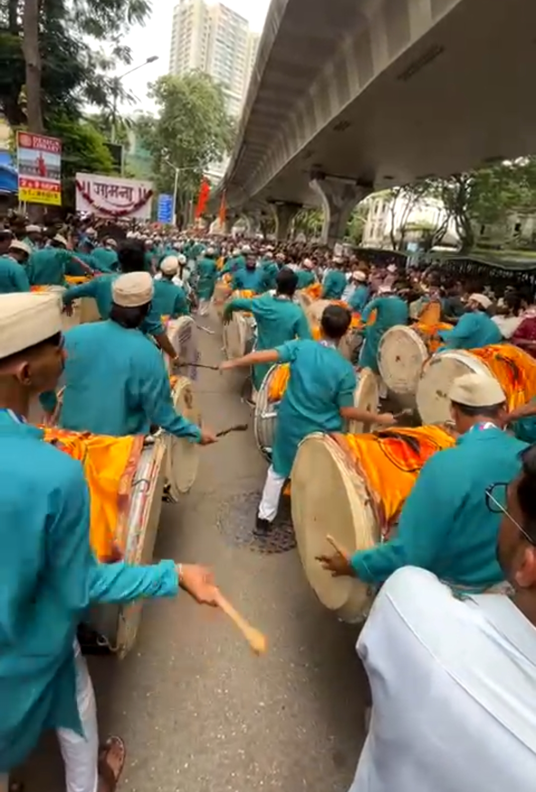
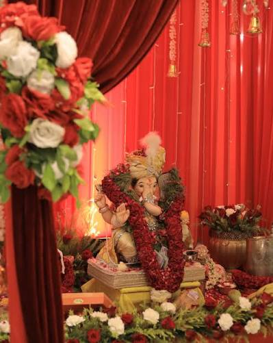
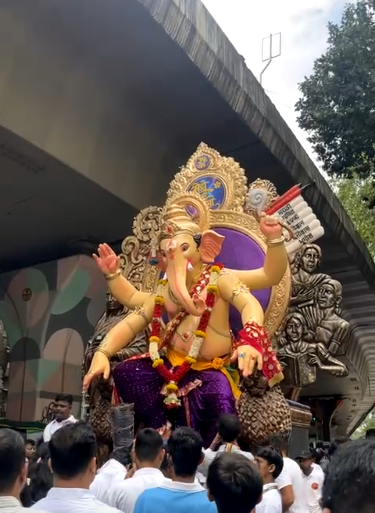
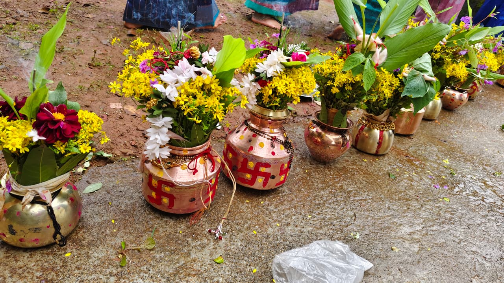
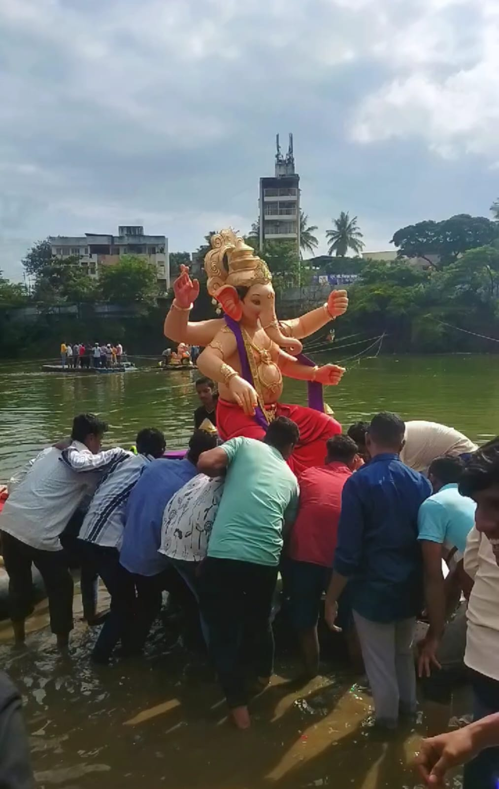
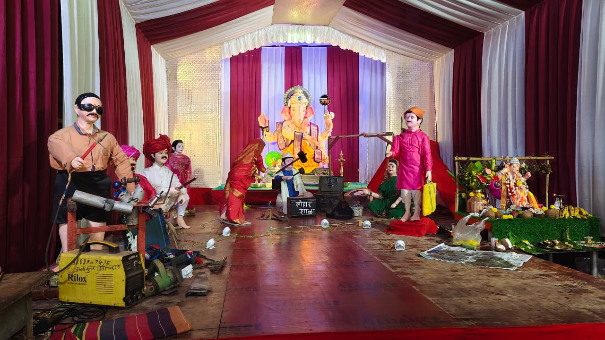

Idols
Beautifully decorated Ganesha idols become the centre of celebrations.

CULTURAL HERITAGE / 02
A celebration of devotion, creativity, community and tradition.

01 / GANESH CHATURTHI
Ganesh Chaturthi is a festival dedicated to Lord Ganesha. People bring Ganesha idols into their homes and community spaces and celebrate with prayers, decorations and cultural activities.
In Maharashtra, the festival has become an important part of community life, bringing people together through shared celebrations and traditions.
THE CELEBRATION

Beautifully decorated Ganesha idols become the centre of celebrations.

Homes and public spaces are decorated to welcome Lord Ganesha.

People come together for prayers, cultural activities and celebrations.
02 / COMMUNITY CELEBRATION
Ganesh Chaturthi brings people together through public celebrations, music, decorations and cultural programs.
Community celebrations create shared experiences and help keep traditions alive across generations.

GANESH VISARJAN
Ganesh Visarjan marks the concluding part of the celebration, when Ganesha idols are carried in processions and immersed in water.
The processions bring together music, dancing, prayers and large community participation, creating memorable cultural experiences.
04 / PHOTO STORY




CULTURAL HERITAGE
Ganesh Chaturthi continues to connect people through devotion, creativity, community and shared cultural experiences. Documenting these celebrations helps preserve their memories for the future.